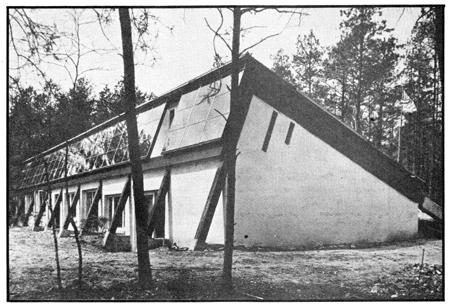

Surely, by now, everyone knows who Dr. Harry Thomason is (a pioneer in the design and construction of solar-heated homes). And, surely, everyone knows who Malcolm Wells is (a pioneer in the design and construction of low energy underground buildings). And, surely, everyone knows about the Edmund Scientific Company (a pioneer in the field of bringing complicated technical subjects and hardware down to the popular level).
But who the heck are Bob and Nancy Homan? Only Only, I say the pioneering young couple who've just put together a whole raft of Thomason's, Wells', and Edmund's best ideas and come up with a brand-new concept in housing: A low energy consumption, sod-roofed, solar heated residence designed from the beginning to be just that and nothing else.
Nancy and Bob worked directly with Dr. Thomason, Malcolm Wells, and Edmund Scientific as they planned and fabricated their new home on a quiet acre in Indian Mills, New Jersey and from the looks of the final result they picked themselves a winning team.
MOTHER will feature this house in greater depth soon. Until then, you should know that a lavishly illustrated manual which documents the design evolution of the Homan residence in meticulous detail is available for $24.95 from the Edmund Scientific Company, 300 Edscorp Building, Barrington, New Jersey 08007: (Ask for Item No. 9469, SOLARIA House Plans and Construction Manual.) The book definitely sets a whole new standard in the how to solar energy field, as you'll see if you're lucky enough to buy or borrow a copy.
You should also know that the Homan solar home is open to visitors from 12 noon until 4 p.m. the first and third Sunday of every month and from 10 a.m. to 2 p.m. the first Thursday of every month (except for December, when no visiting days will be scheduled). The tour will include the entire house, except for the bedroom areas, and a $1.00 per person charge will be asked to help defray breakage and the normal costs of tourist traffic. Groups of 10 or more can contact the Homans at (609) 268-0045 to discuss special rates.
|
 |
|
|